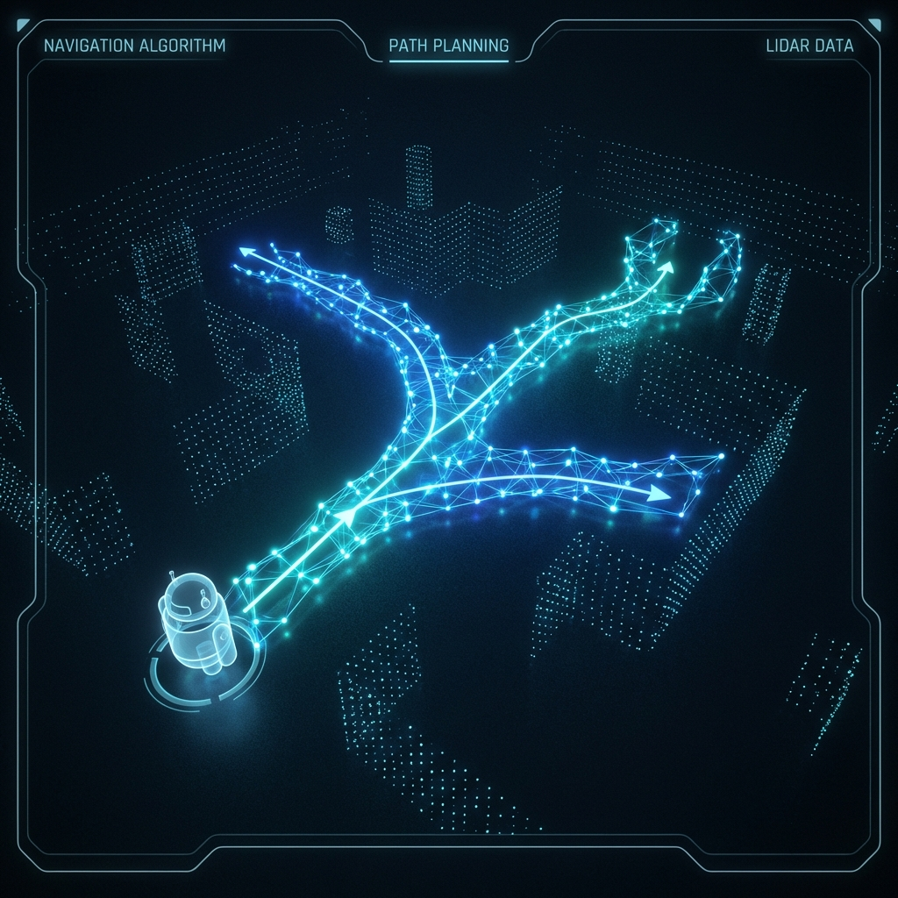

FormicaBot: Bio-Inspired Swarm Robotics Platform
Custom hexapedal mobile platform closing the simulation-to-reality gap in collective intelligence. Implements dual-modality synthetic pheromone communication (optical/thermal projection) and decentralized stigmergy under strict energy budgets.
| Compute Architecture | STM32F4 + Raspberry Pi Zero 2W / ESP32-S3 |
| Locomotion Power | ≤1.2 W average consumption (hexapod gait) |
| Swarm Stigmergy | Stochastic reaction-diffusion PDE pheromone maps |
| Edge Perception | Quantized MobileNetV3 + 120 FPS optical flow |